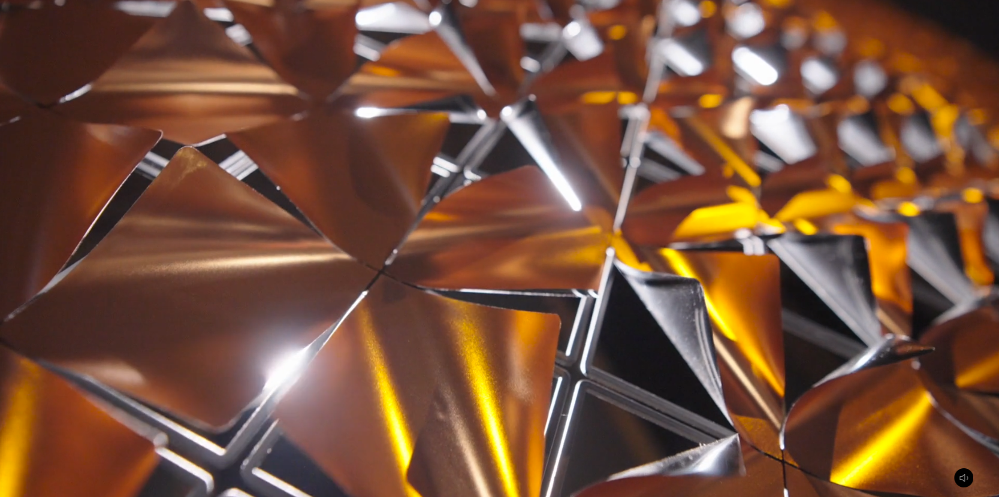
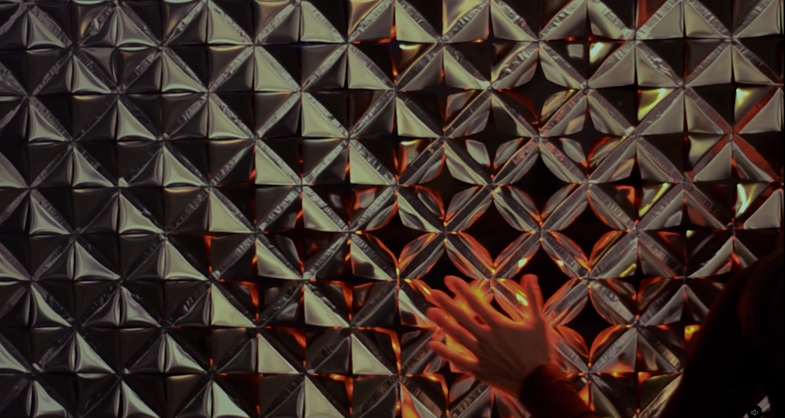
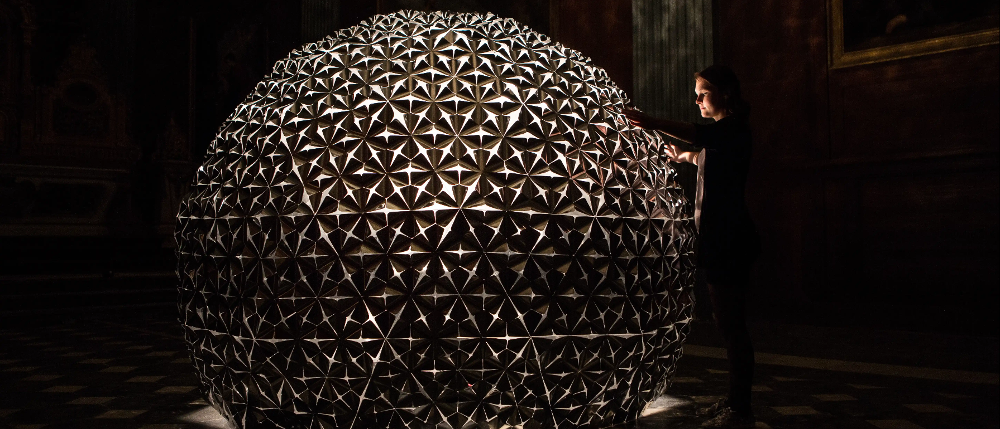
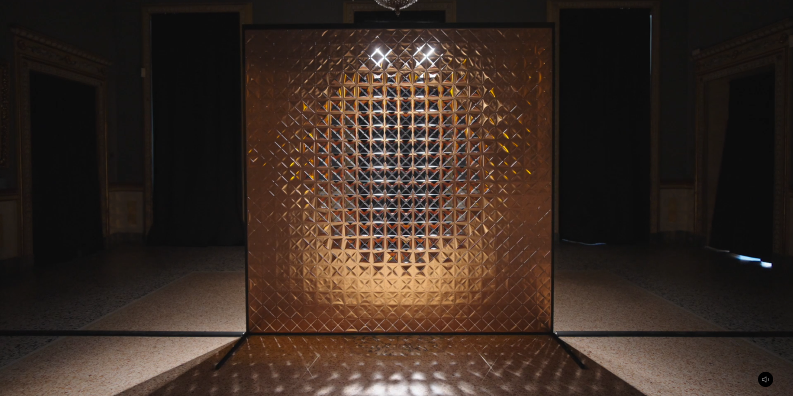
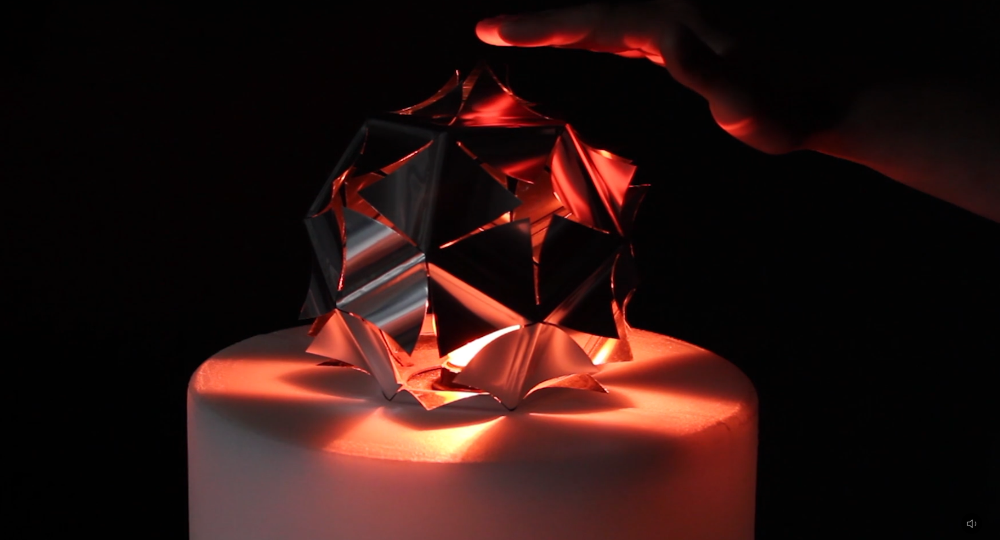

O projeto Lotus Dome representa um ponto de inflexão estratégico na disciplina do design contemporâneo, assinalando a transição definitiva da arquitetura como uma entidade estática para uma fronteira de ambientes responsivos. Esta instalação não deve ser compreendida meramente como um objeto artístico efêmero, mas como um protótipo funcional de como os espaços podem transitar de uma passividade material para uma participação ativa, reagindo dinamicamente ao comportamento e à presença do ocupante. Ao integrar tecnologia sensorial a uma estética orgânica, o projeto redefine o papel do usuário, que deixa de habitar um volume inerte para interagir com uma interface espacial "viva" e inteligente.
Nome do Projeto: Lotus Dome.
Tipologia: Instalação imersiva; arquitetura efêmera e reativa (design phygital ).
Idealização: Studio Roosegaarde (Daan Roosegaarde).
Localização Original: Igreja de Sainte Marie Madeleine (Lille, França).
Temporalidade: Apresentação original em 2012, no contexto do festival Lille 3000; pesquisa contínua de superfícies inteligentes iniciada pelo estúdio em 2010.
O Lotus Dome posiciona-se na vanguarda da arquitetura responsiva ao desafiar a percepção tradicional do espaço construído. Fruto de uma investigação iniciada em 2010 sobre superfícies inteligentes, a obra introduz uma materialidade que "respira", estabelecendo um diálogo tátil e luminoso com o observador. Esta abordagem avalia a arquitetura não pelo seu volume físico imutável, mas pela sua capacidade de resposta, transformando a superfície em um sistema de feedback imediato à ação humana. O projeto exemplifica a busca pela harmonia entre pessoas e o ambiente através da tecnologia, subvertendo a rigidez da arquitetura clássica.Esta base conceitual e técnica serve como alicerce para compreendermos a fundamentação intelectual que permitiu a inserção de tal tecnologia em um contexto histórico sensível.
A inserção do Lotus Dome na Igreja de Sainte Marie Madeleine, uma estrutura do século XVII, ocorreu sob a égide do festival Lille 3000 (tema "Fantastic"). A escolha deste sítio de patrimônio histórico não foi fortuita; a justaposição de intervenções tecnológicas de ponta em locais sagrados é uma estratégia deliberada para a ressignificação da memória urbana. O projeto evoca o conceito holandês de Schoonheid — que sintetiza beleza e limpeza/pureza — ao utilizar a luz para purificar visualmente o espaço e estabelecer um novo padrão de estética tecnológica que respeita a solenidade do passado.
O termo "Tecno-Poesia" , cunhado por Roosegaarde, descreve a fusão sinérgica entre o rigor da engenharia digital e a carga emocional do design. Existe uma dialética clara entre a robustez imutável da alvenaria eclesiástica e a delicadeza das centenas de flores de alumínio que compõem o domo. Essa "arquitetura orgânica de sombras" estabelece uma conexão estética direta com o Oculus do Panteão de Roma, onde a luz natural é substituída por uma luminosidade tecnológica que emana da própria estrutura em resposta ao visitante, mediando o contraste entre a pedra secular e o metal reativo.
O objetivo estratégico transcende a visualidade. Ao inserir uma "intervenção alienígena" em um local de culto, o Studio Roosegaarde transforma as ruínas através de uma luz que não vem do exterior, mas da própria tecnologia. O espaço, outrora silencioso e estático, é revitalizado por uma interface que depende da interação humana para se revelar. A tecnologia atua como o motor de uma "beleza limpa", onde a intervenção efêmera não degrada o patrimônio, mas o redescobre através de uma dinâmica de luz e movimento que ressignifica o vazio histórico.Desta análise teórica e contextual, passamos agora a observar a mecânica física que permite essa interação sinérgica entre o público e o objeto.
Em espaços efêmeros imersivos, a previsibilidade espacial é substituída por uma dinâmica de causa e efeito imediata. No Lotus Dome, o usuário deixa de ser um espectador passivo para se tornar o motor fundamental do ambiente. A arquitetura deixa de ser um cenário fixo e assume o papel de um agente ativo, onde a experiência é moldada pelo fluxo e pela proximidade, transformando o biológico em gatilho para o digital.
O funcionamento do domo baseia-se em um sistema de arquitetura responsiva que prioriza a luz como mediadora:
Sensores de Proximidade e Luz: O sistema detecta a presença humana, mas o comportamento cinético das flores é uma reação direta aos estímulos luminosos e à interação de proximidade captada pelos sensores.



Essa dinâmica altera o estado psicológico do visitante ao criar uma relação íntima e direta com o espaço. O ocupante percebe que seus movimentos ditam o ritmo da luz e a abertura da forma, o que remove a barreira entre o indivíduo e a obra. O impacto resultante é uma atmosfera de imersão total onde a rigidez histórica da igreja é "amaciada" pela tecnologia responsiva. O espaço construído passa a refletir o fluxo social, tornando-se uma extensão física do comportamento humano, atingindo o ideal de harmonia entre pessoas e o ambiente proposto pelo Studio Roosegaarde.O Lotus Dome demonstra, de forma acadêmica e prática, a harmonia buscada entre pessoas, tecnologia e o ambiente construído, consolidando-se como um manifesto sobre a arquitetura do futuro: um sistema que não apenas abriga a vida, mas vibra em uníssono com ela.
A intervenção do Lotus Dome na Igreja de Sainte Marie Madeleine, em Lille, representa uma aplicação magistral de arquitetura efêmera em um contexto de patrimônio histórico monumental. A implantação centralizada na nave do século XVII não é apenas uma escolha estética, mas uma estratégia técnica de preservação: ao ocupar o "vazio" central, a instalação evita qualquer contato físico com a alvenaria original, respeitando as restrições rigorosas de intervenção em edifícios tombados. Esta centralidade reconfigura a nave como um novo núcleo gravitacional, onde a estrutura autoportante de aproximadamente 2.500 pés quadrados de impacto sensorial estabelece uma dialética entre a permanência da pedra e a transitoriedade do objeto digital.
Através do conceito de "Techno-Poetry" , Roosegaarde opera o que podemos definir como a digitalização da estética barroca . Enquanto a arquitetura clássica ao redor é definida pela rigidez e massa, o domo atua como um organismo vivo. Ele preenche o vácuo espacial não com volume inerte, mas com comportamento, mimetizando a complexidade ornamental dos afrescos e esculturas sacras através de uma geometria dinâmica e responsiva.

O domo foi dimensionado para dialogar com o pé-direito monumental sem competir com a leitura das abóbadas. Sua escala permite que o visitante perceba a grandiosidade do edifício original através de um novo filtro. A peça atua como um mediador de proporções, preenchendo a escala intermediária entre o corpo humano e a monumentalidade arquitetônica, mantendo a integridade visual da perspectiva histórica da nave.
A instalação subverte a circulação linear tradicional do espaço sacro, convertendo-a em um fluxo circular e contemplativo. O movimento e a luz atraem o público para o centro, alterando a percepção da "aula" da igreja. O visitante deixa de ser um espectador passivo da história para se tornar o agente ativo que, através de sua presença, desencadeia a performance da obra. Esta transição narrativa prepara a análise para a infraestrutura física que permite tal dinamismo: a ciência por trás de seus componentes modulares.
A viabilidade de uma estrutura que reage ao ambiente em escala monumental exige um compromisso rigoroso com o Design for Disassembly (DfD) e a ciência dos materiais. A escolha da modularidade não visa apenas a facilidade logística, mas a otimização da energia incorporada (embodied energy) e a gestão do ciclo de vida dos componentes.
A estrutura esférica é composta por incrementos modulares padronizados , seguindo uma lógica geométrica que privilegia a reversibilidade das conexões . Diferente da construção convencional, que utiliza fixações químicas ou adesivos, o Lotus Dome utiliza sistemas de fixação mecânica que garantem estabilidade estrutural com peso reduzido. Esta anatomia leve permite que a cúpula seja autoportante, exercendo apenas cargas gravitacionais sobre o piso histórico, eliminando a necessidade de ancoragens laterais invasivas.
Materiais Tecnológicos (Flores de Lótus)
A pele da cúpula é formada por centenas de "flores inteligentes" de Mylar (lâminas de alumínio smart foil) . Este material foi selecionado por sua excepcional relação resistência-peso e durabilidade mecânica sob estresse repetitivo. A espessura das lâminas é calibrada para permitir flexibilidade sem deformação plástica permanente, mantendo a integridade da "pele" ao longo de múltiplos ciclos de exposição.
O avanço técnico reside na eliminação de motores mecânicos complexos. As pétalas utilizam princípios de Ligas com Memória de Forma (SMA - Shape Memory Alloys) ou atuadores térmicos simplificados que reagem de forma autônoma. Diferente de sistemas robóticos pesados, as folhas de alumínio do Lotus Dome possuem uma inteligência material intrínseca: elas "aprendem" a forma de repouso e a de ativação, reduzindo drasticamente a necessidade de manutenção e o consumo energético, preparando a integração com o sistema nervoso eletrônico da obra.
3. Elementos de Projeto — Engenharia de Sistemas e Luminotécnica Dinâmica
O sistema interativo funciona como o sistema nervoso da instalação, gerenciando o que chamamos de estética comportamental (behavioral aesthetics) . É a ponte técnica que permite a interatividade humano-espaço em tempo real.
Fiel aos dados técnicos do projeto, a interação é desencadeada primariamente por uma rede de sensores que reagem à luz e proximidade . Ao contrário de sensores de calor passivos, este sistema responde à luz emitida ou refletida pelos visitantes (como lanternas ou o brilho de dispositivos móveis), processando os dados via microcontroladores para acionar a contração ou expansão das pétalas. Este loop de feedback garante que a resposta física seja uma extensão direta do comportamento do público no espaço.
A iluminação interna é o motor da narrativa visual. O posicionamento estratégico de LEDs internos cria um efeito de chiaroscuro moderno: à medida que as pétalas se movem, o "vazamento" de luz pelas frestas projeta sombras complexas e reflexos nas paredes de pedra da igreja. Este padrão mutável projeta a tecnologia do século XXI sobre a arquitetura do século XVII, criando uma atmosfera imersiva onde a luz atua como material de construção efêmero.
A eficácia do sistema reside na baixa latência da resposta luz-movimento. Esta sincronização imediata valida a presença do visitante, transformando a percepção tradicional do patrimônio estático em uma experiência dinâmica. A complexidade técnica, entretanto, é contida por uma logística que prioriza a integridade do monumento histórico.
4. Logística, Efemeridade e Design for Disassembly (DfD)
Intervir em Sainte Marie Madeleine exige uma responsabilidade técnica balizada pelo conceito de Triple Bottom Line (social, ambiental e financeiro). A natureza efêmera da obra não é uma limitação, mas uma métrica de sustentabilidade e respeito ao patrimônio.
O Lotus Dome é um exemplar de fluxo de resíduo zero (zero-waste stream) . Através do DfD, cada conexão foi projetada para ser reversível. Enquanto a restauração tradicional muitas vezes lida com o dilema entre o cimento Portland (invasivo e rígido) e argamassas à base de cal (mais flexíveis, porém lentas), a instalação Roosegaarde rejeita qualquer aglutinante químico. A modularidade permite que, ao fim da exposição, 100% dos materiais retornem ao ciclo produtivo ou sejam reutilizados em outras montagens, atendendo às métricas de fim de vida dos materiais ( material end-of-life metrics ).
Tecnicamente, a montagem é classificada como não-invasiva . A estrutura é totalmente autoportante, utilizando sua própria geometria para estabilização. Ao evitar perfurações ou adesivos permanentes, garante-se que a integridade física da pedra original permaneça inalterada. A instalação "flutua" na nave, respeitando as superfícies históricas e garantindo que, após a desmontagem, não restem vestígios da intervenção, preservando o valor histórico e material do edifício.
O baixo peso dos componentes de Mylar e a padronização dos incrementos modulares facilitam a logística global. A facilidade de desmontagem e o baixo volume de transporte demonstram que a alta tecnologia pode ser aliada à eficiência logística. O design permite que a Lotus Dome seja transportada e reconfigurada em diferentes contextos sem perda de funcionalidade ou integridade estrutural.
A Lotus Dome exemplifica o equilíbrio ideal entre inovação tecnológica e conservação. Ao integrar ciência dos materiais avançada, sistemas de controle responsivos e princípios rigorosos de DfD, o Studio Roosegaarde demonstra que a arquitetura efêmera pode ser um instrumento poderoso de reinterpretação do patrimônio, oferecendo um impacto visual profundo com um impacto físico nulo sobre o tecido histórico.
1. Página 8: Análise Crítica – O Atrito entre o Hiper-tecnológico e o Patrimônio
O Lotus Dome , concebido para a igreja de Sainte Marie Madeleine em Lille, consolida-se como um paradigma da arquitetura efêmera do século XXI. Esta intervenção transcende a mera instalação de um objeto físico; ela opera como uma "imagem-objeto", conforme teorizado por Gülşah Güleç, redefinindo a fenomenologia do espaço histórico. Ao posicionar uma estrutura responsiva em um ambiente marcado pela perenidade e pelo silêncio litúrgico, Daan Roosegaarde não apenas ocupa o vazio, mas utiliza a tecnologia para transmutar a inércia arquitetônica em uma experiência dinâmica de fluxos e sombras, onde o virtual caracteriza o tangível.Desafios Logísticos e de Infraestrutura A implementação de uma cúpula composta por centenas de "flores inteligentes" em um substrato histórico do século XVII exige uma estratégia técnica infalível. Diferente da série Lotus original, que respondia estritamente à luz, o Lotus Dome integra uma rede complexa de sensores térmicos e infravermelhos que reagem à presença e ao calor humano. A montagem desta "pele" tecnológica sobre a casca rústica da igreja impõe a adoção rigorosa dos princípios de Design for Deconstruction (DfD) , conforme preconizado por Timothy P. Olson. A engenharia do projeto deve garantir impacto zero na integridade estrutural, operando com cabeamento extensivo e atuadores mecânicos que funcionam de forma autônoma e reversível. A preservação do patrimônio dita, portanto, a invisibilidade do hardware, forçando uma síntese onde a alta tecnologia atua como uma prótese temporária sem deixar vestígios após a desmontagem.Engajamento e Interatividade A obra orquestra a transição do visitante de observador passivo para agente motor do espaço. A eficácia da instalação reside na tensão gerada entre o comportamento orgânico dos smart foils e a rigidez secular do entorno. Enquanto as flores se desdobram em um balé mecânico disparado pelo calor dos corpos, o espaço outrora estático passa a "respirar". Essa interatividade rompe a passividade ritualística, humanizando a tecnologia sob o conceito de Techno-Poetry . O contraste radical entre a luz pulsante e a sombra projetada nas abóbadas históricas valida a tecnologia não como um fim, mas como uma ferramenta de ressignificação narrativa.Conclusão da Seção: Esta análise crítica demonstra que a arquitetura efêmera atinge sua plenitude quando a precisão do Design for Deconstruction encontra a sensibilidade da interatividade, oferecendo ao mercado lições sobre como revitalizar o patrimônio sem comprometê-lo.
2. Página 9: Repertório Profissional – Aplicações Práticas em Design e Paisagismo
A transposição de conceitos do design efêmero para projetos permanentes de alto padrão é uma manobra estratégica que eleva a competitividade de qualquer estúdio. A inovação tecnológica, quando aplicada com rigor, deixa de ser um ornamento para se tornar a espinha dorsal de uma curadoria de experiências exclusivas para clientes premium.Solução I: Zoneamento Invisível via Iluminação e Movimento Reativo A implementação de sistemas de luz acionados por presença permite delimitar fluxos espaciais sem o uso de barreiras físicas, mantendo a amplitude e a fluidez visual. Inspirando-se no projeto "15 Knots" da Atlas Lab , o paisagismo contemporâneo deve incorporar o movimento mecanizado — como percursos perimetrais que cercam campos vegetais reativos ou "wind walls" que guiam o deslocamento do usuário através de correntes de ar e luz. Esta abordagem transforma a circulação em um evento sensorial, eliminando divisórias rígidas em favor de um zoneamento fluido e atmosférico.Solução II: Materiais Inteligentes e Revestimentos de Alta Performance A viabilidade de materiais responsivos com memória de forma ( Shape Memory ) em interiores corporativos redefine a funcionalidade espacial. Superfícies que alteram textura ou porosidade em resposta ao calor ambiental não apenas agregam valor estético, mas otimizam a acústica e o controle térmico. Paralelamente, a aplicação da tecnologia NASA (GSC-TOPS-262) — o revestimento transparente Lotus via deposição a vácuo — oferece um diferencial estratégico. O uso de superfícies ópticas hidrofóbicas e autolimpantes em fachadas de vidro e clarabóias reduz drasticamente os custos de manutenção e mitiga a contaminação por poeira e água, garantindo a longevidade visual em projetos de luxo.Solução III: Retro-Futurismo e a Dialética do Contraste A estratégia de design fundamentada no "contraste radical" é superior a qualquer tentativa de camuflagem. Ao tratar a tecnologia de ponta como uma prótese temporária inserida em uma casca rústica, criamos uma Techno-Poetry que valoriza a preexistência por meio da oposição dialética. Esta abordagem permite que a narrativa histórica do edifício seja realçada pela precisão do high-tech , estabelecendo um diálogo temporal que enriquece a identidade do projeto sem destruir a memória do substrato original.Conclusão da Seção: A execução bem-sucedida destas soluções complexas exige uma documentação técnica rigorosa e detalhamento de conexões, assegurando que a visão poética seja sustentada pela robustez da engenharia.
O rigor na atribuição de créditos e na fundamentação teórica é o pilar que valida este estudo de caso tanto acadêmica quanto profissionalmente. A precisão documental garante que a inovação phygital seja percebida como uma disciplina técnica madura e responsável.Ficha Técnica do Projeto
Idealizador: Daan Roosegaarde (Studio Roosegaarde)
Ano: 2012 (Pesquisa iniciada em 2010)
Local Original: Igreja Sainte Marie Madeleine, Lille, França
Tipologia: Arquitetura Efêmera / Instalação Interativa / Techno-Poetry
Materiais Principais: Smart foils de Mylar (folhas inteligentes), sensores térmicos de alta precisão, sensores infravermelhos, atuadores mecânicos de baixo ruído, sistemas de LED.Nota de Layout: Todas as fotografias e diagramas: cortesia de Studio Roosegaarde.Referências Bibliográficas
Güleç, Gülşah. (2026). A Discussion on Temporal and Ephemeral Architecture . A+Arch Design International Journal of Architecture and Design. (Análise sobre a transição paradigmática do objeto para a imagem e o conceito de imagem-objeto).
Roosegaarde, Daan. Techno-Poetry: The Design of Surfaces and Organic Movement . (Documentação técnica das séries Lotus Oculus e Lotus Dome).
Olson, Timothy P. (2010). Design for Deconstruction (DfD) and Modularity in a Sustainable Built Environment . Washington State University. (Fundamentação sobre modularidade e reversibilidade estrutural).
NASA Technology Transfer Program. Alternative Transparent Coating Lotus suitable for Optics with Vacuum Deposition Layer (GSC-TOPS-262) . (Referência técnica para revestimentos hidrofóbicos e mitigação de particulados).
Atlas Lab. 15 Knots Installation: Wind Walls and Perimeter Path Mechanics . Reford Gardens, Quebec. (Estudo sobre mecanização e forças naturais aplicadas ao paisagismo).Conclusão Final: Este estudo reafirma o papel do designer contemporâneo como um curador de experiências phygital, unindo a responsabilidade ambiental do Design for Deconstruction à inovação estética da Techno-Poetry em uma busca incessante por harmonia tecnológica.